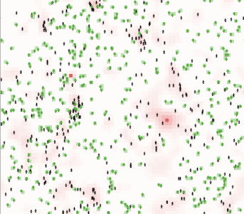
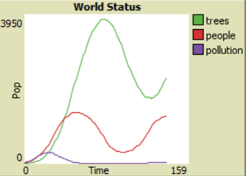
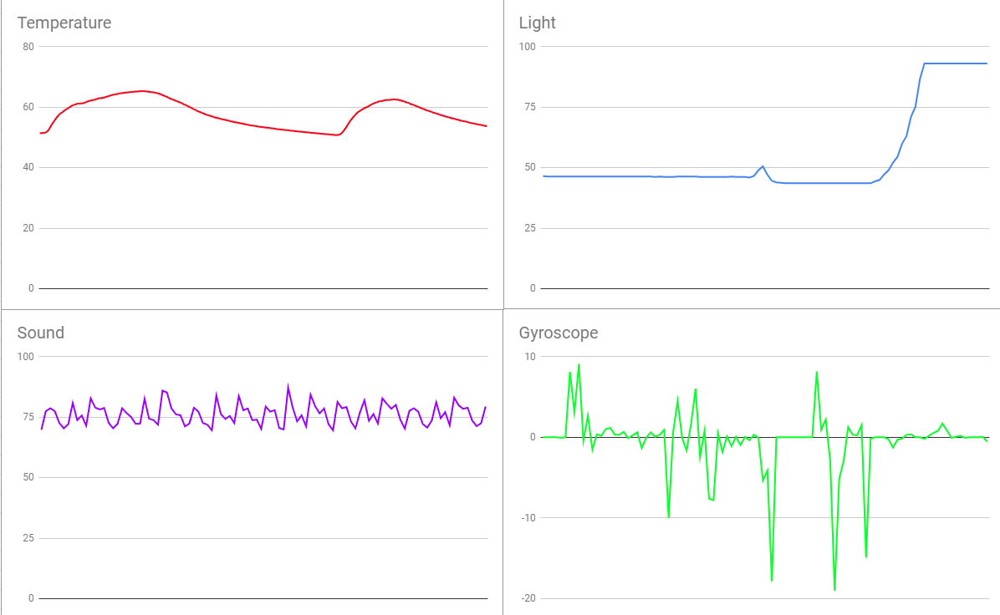

Home
Portfolio
About Me
This is my Portfolio Page!

PLTW 1.1.9 Project

For our 1.1.9 project, my partner Khushi and I made Solar Knowledge. It's an interactive program where you can learn about the planets and watch them orbit around the sun. When you first run the program, the planets are still and in a straight line. You are asked ehat planet you would want to learn about. When you input one, it's orbit will highlight green, and give you a fun fact. If you don't want to learn anymore, you can say no, and the planets will start orbiting the sun.
PLTW 1.2.5 Project

For our 1.2.5 project, my partner David and I made Memory Match. It's a simple game where the goal is to get all 18 matches out of a 6x6 grid. When you eventually get all the matches, the game wil print out a statement saying that you won.
Scratch Project: Can Shooter!

For our Scratch project, my partner Alexander and I came up with Can Shooter. It's a Duck Hunt like game where your goal is simple: shoot the cans. There are many different levels you can reach and each gets harder as time progresses. Can you beat the game? Click the link below to find out.
Can Shooter
PLTW 3.2.4 Project.

This PLTW project was all about sorting data and graphing it. Fot this my partner Erin and I worked on sording the data on bee colonies and honey production. We used arrays to sort the data and used matplotlib and pandas imports to make graphs of our work.
PLTW 4.1.4 Project: Pollution.


This PLTW project was about simulating trends in data. For this, my partner Erin and I chose a simulation on pollution. It simulated people, plants, and pollution and how the interacted with each other. We came to the conclusion that the more people there were, the more trees there were, and less pollution from the power plants occured. We decided to make our own changes to the simuation, where we added a population limit and pollution caused by the people themselves. This cause the simulation to break less frequently, where the population would get out of controll.
PLTW 3.1.6 Project: Rover Phone Home.

This PLTW Project was about recognizing patterns data and matching it. My partner Erin and I got the rover's data provided and sorted them into 4 groups based on the rover's sensors. We then used the information provided about the regions on the planet to see if our data lined up with one of the regions. Using what we had, we came up with the idea that the tropical islands best matched the data, but it was really the forest.